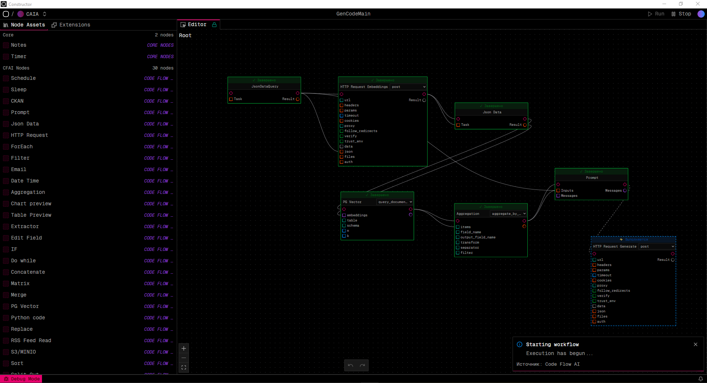
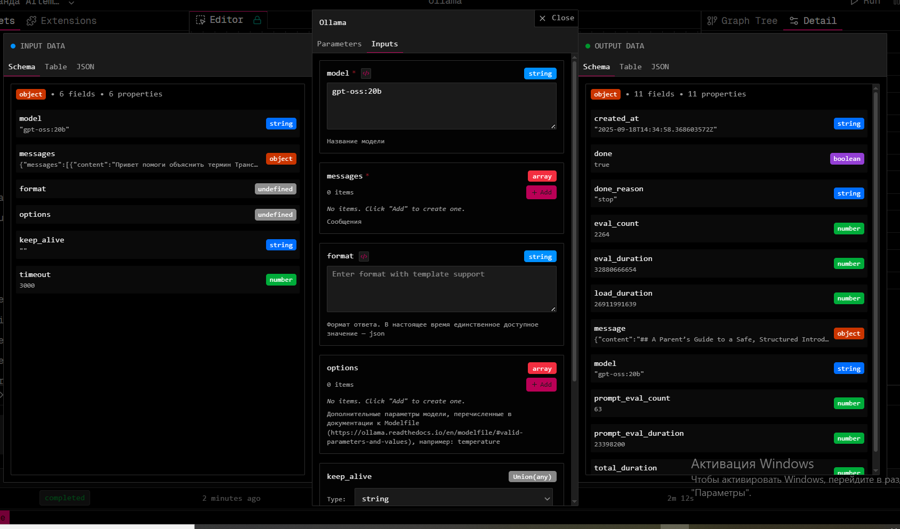
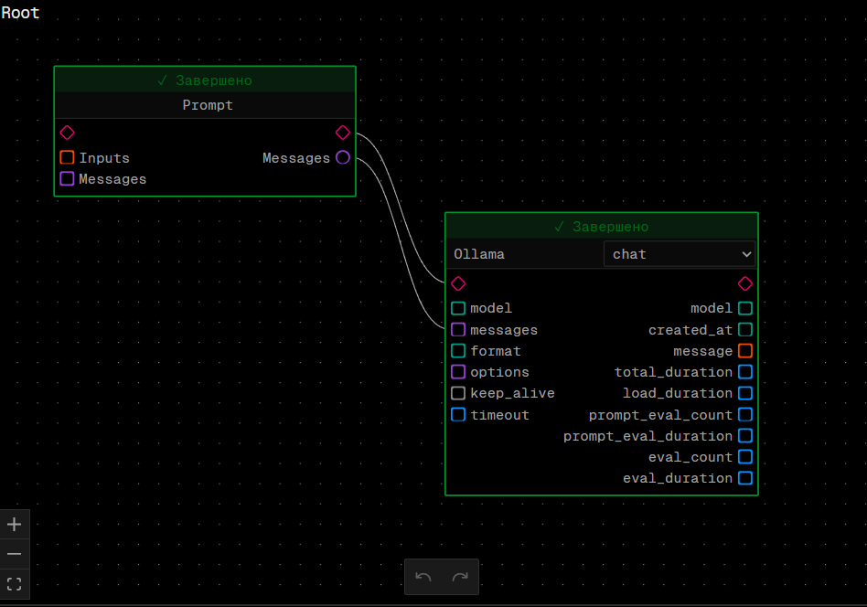
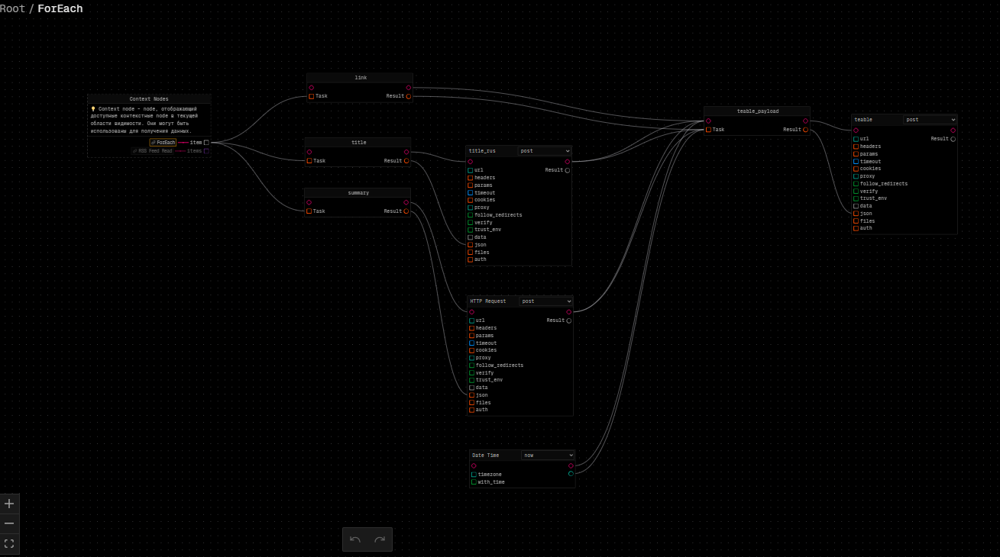
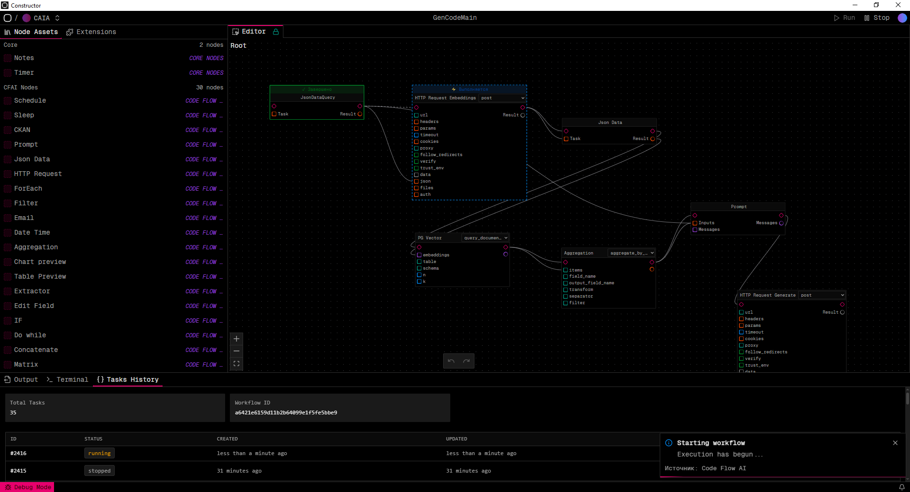
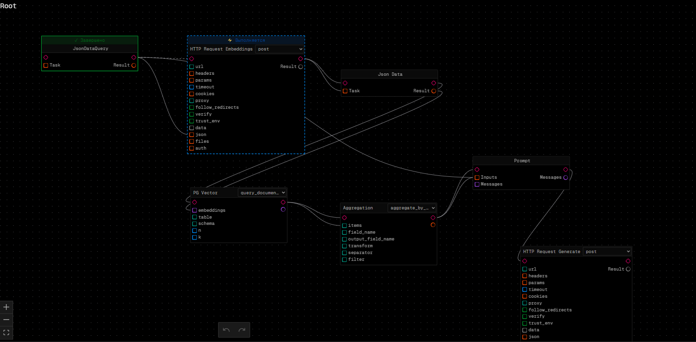
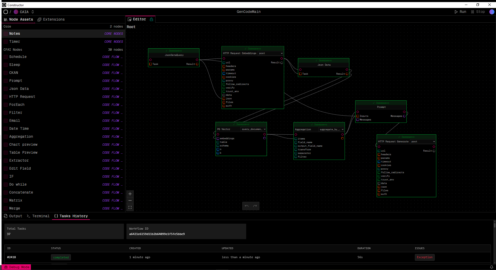

Глоссарий¶
| Термин | Определение |
|---|---|
| Рабочий процесс (workflow) | Последовательный запуск действий из доступного набора |
| Нода (node) | Базовая единица действия в workflow |
| Контекст (Context) | Данные, доступные в текущей области видимости |
| Параметр (Parameters) | Статическая настройка ноды |
| Вход/ Выход (Input/Output) | Динамические порты данных |
| Холст (Canvas) | Рабочая область для построения workflow |
| Соединение (Connection) | Связь между нодами для передачи данных |
| Шаблон (Template) | Формат для передачи данных между нодами {{node.field}} |
| Цикл (Loop) | Повторяющееся выполнение нод (ForEach, DoWhile) |
| Условие (Condition) | Логическое выражение для ветвления (If, Switch) |
Начало работы¶
Интерфейс системы¶
Система AI Constructor предоставляет визуальный интерфейс для создания рабочих процессов:
- Панель нод - библиотека доступных действий
- Холст - рабочая область для построения workflow
- Панель свойств - настройка выбранной ноды
- Панель результатов - просмотр выполнения и результатов
Создание нового workflow¶
- Нажмите "Create +" в разделе Projects команды
- Введите имя проекта
- Выберите расширение Code
- Введите название и описание процесса
- Начните добавлять ноды из панели слева
Правила построения рабочего процесса¶
Основные принципы¶
- Логика передачи данных и управления потоком разделены - данные передаются через соединения, управление через последовательность выполнения
- Связи между нодами представлены шаблонами типа
{{node_uuid.output_key}} - Динамическая подстановка значений параметров во время выполнения
- Параллельное выполнение нод без зависимостей
Порядок выполнения¶
Система автоматически определяет порядок выполнения нод:
- Запускаются ноды без родителей - действия без зависимостей от других нод
- Затем запускаются потомки выполненных нод
- Параллельно выполняются ноды, готовые к запуску
- При ошибке система повторяет выполнение до 3 раз
Построение графа¶
- Располагайте ноды слева направо - это упрощает понимание потока данных
- Соединяйте ноды стрелочками - указывайте порядок выполнения
- Группируйте связанные ноды - используйте логические блоки

Ограничения¶
- Без циклов - система не поддерживает циклические зависимости
- Без управления состоянием - каждая нода выполняется независимо
- Обработка ошибок - при ошибке workflow останавливается после 3 попыток
- Один одновременно запущенный процесс в рамках одного проекта
- Одно возможное расписание в рамках одного проекта
Работа с нодами¶
Добавление нод на холст¶
- Найдите нужную ноду в панели нод
- Перетащите ноду на холст
- Расположите ноду в удобном месте
Настройка ноды¶
- Выберите ноду на холсте (кликните на неё)
- Откройте панель свойств (двойной клик или кнопка "Настройки")
- Заполните параметры:
- Метод - выберите режим работы ноды
- Параметры - статические настройки
- Входные данные - динамические значения

Соединение нод¶
- Наведите курсор на выходной порт ноды (круг)
- Перетащите линию к входному порту другой ноды (квадрат)
- Отпустите кнопку мыши для создания соединения

Передача данных между нодами¶
В настройках ноды используйте шаблоны для получения данных от других нод:
{{имя_ноды}}- весь результат ноды{{имя_ноды.поле}}- конкретное поле результата{{имя_ноды.[0]}}- первый элемент списка{{имя_ноды.поле.[0]}}- поле первого элемента списка
Примеры:
{{rss_read}} # Весь результат
{{rss_read.title}} # Поле title
{{rss_read.items.[0]}} # Первый элемент списка
{{rss_read.items.[0].title}} # Title первого элемента
Типы нод¶
Обычные ноды¶
Выполняют одну операцию с данными:
- HTTPRequestNode - HTTP запросы к внешним API
- DateTimeNode - работа с датой и временем
- JSONDataNode - обработка и создание JSON данных
- PythonCodeNode - выполнение пользовательского Python кода
- RssFeedReadNode - чтение RSS лент
- FilterNode - фильтрация данных по условиям
Ноды управления потоком¶
IfNode - Условное выполнение¶
Позволяет выполнять разные ветки workflow в зависимости от условия:
- Добавьте IfNode на холст
- Настройте условие в панели свойств
- Соедините выходы с разными нодами для true/false случаев
SwitchNode - Множественный выбор¶
Выполняет одну из нескольких веток в зависимости от значения:
- Добавьте SwitchNode на холст
- Настройте правила для каждого случая
- Соедините выходы с соответствующими нодами
Ноды циклов¶
Внутренний граф нод доступен через Shift+leftClick по названию ноды

ForEachNode - Цикл по списку¶
Обрабатывает каждый элемент списка:
- Добавьте ForEachNode на холст
- Подключите список к входу "items"
- Настройте внутренние ноды для обработки каждого элемента
- Выберите режим выполнения: синхронный или асинхронный
DoWhileNode - Цикл с условием¶
Повторяет выполнение до выполнения условия выхода:
- Добавьте DoWhileNode на холст
- Настройте условие выхода и максимальное количество итераций
- Добавьте ноды для выполнения в цикле
Запуск и мониторинг¶
Запуск workflow¶
- Нажмите кнопку "Run" в верхней панели интерфейса
- Дождитесь уведомления о старте процесса
- Наблюдайте выполнение - ноды подсвечиваются по мере выполнения

Мониторинг выполнения¶
Во время выполнения workflow:
- Ноды подсвечиваются в порядке выполнения
- Статус отображается в реальном времени
- Ошибки показываются с подробным описанием
- Прогресс выполнения виден на холсте

Просмотр результатов¶
После выполнения workflow доступны:
- TaskHistory - список выполненных задач с ID, статусом и временем
- Output - логи выполнения для отладки
- Результаты нод - доступны через двойной клик на ноду

Практические примеры¶
Пример 1: Обработка RSS ленты¶
Создайте workflow для чтения и обработки новостей:
- Добавьте RssFeedReadNode - для чтения RSS ленты
- Настройте URL ленты в параметрах ноды
- Добавьте ForEachNode - для обработки каждой новости
- Внутри цикла добавьте:
- DateTimeNode - для получения текущей даты
- HTTPRequestNode - для обработки текста через AI
- JSONDataNode - для формирования результата
Правила построения:
- Расположите ноды слева направо
- Соедините RssFeedReadNode с ForEachNode
- Настройте передачу данных через шаблоны
{{rss_read.result}}
Пример 2: Условная обработка данных¶
Создайте workflow с ветвлением:
- Добавьте HTTPRequestNode - для получения данных
- Добавьте IfNode - для проверки условия
- Настройте условие (например, количество элементов > 10)
- Соедините выходы с разными нодами обработки
Пример 3: Циклическая обработка¶
Создайте workflow с повторением:
- Добавьте DoWhileNode - для циклического выполнения
- Настройте условие выхода (например, достижение определенного результата)
- Добавьте ноды для выполнения в цикле
- Установите максимальное количество итераций для безопасности
Советы и рекомендации¶
Лучшие практики¶
- Используйте понятные имена для нод и workflow
- Располагайте ноды слева направо для лучшего понимания потока
- Группируйте связанные ноды визуально
- Тестируйте workflow на небольших данных перед полным запуском
Отладка¶
- Проверяйте соединения между нодами
- Используйте JSONDataNode для просмотра промежуточных результатов
- Анализируйте логи в окне Output при ошибках
- Тестируйте ноды по отдельности перед объединением в workflow
Типичные ошибки и решения¶
Ошибки построения workflow¶
Проблема: Циклические зависимости
- Решение: Проверьте, что нода A не зависит от ноды B, которая зависит от A
Проблема: Нода не получает данные
- Решение: Проверьте правильность шаблонов
{{node_name.field}}
Проблема: Workflow зависает
- Решение: Убедитесь, что все ноды имеют выходы и нет тупиковых веток
Ошибки выполнения¶
Проблема: Нода завершается с ошибкой
- Решение: Проверьте входные данные и параметры ноды
Проблема: Неправильный формат данных
- Решение: Используйте JSONDataNode для преобразования данных
Проблема: Таймаут выполнения
- Решение: Увеличьте таймаут для нод с долгим выполнением